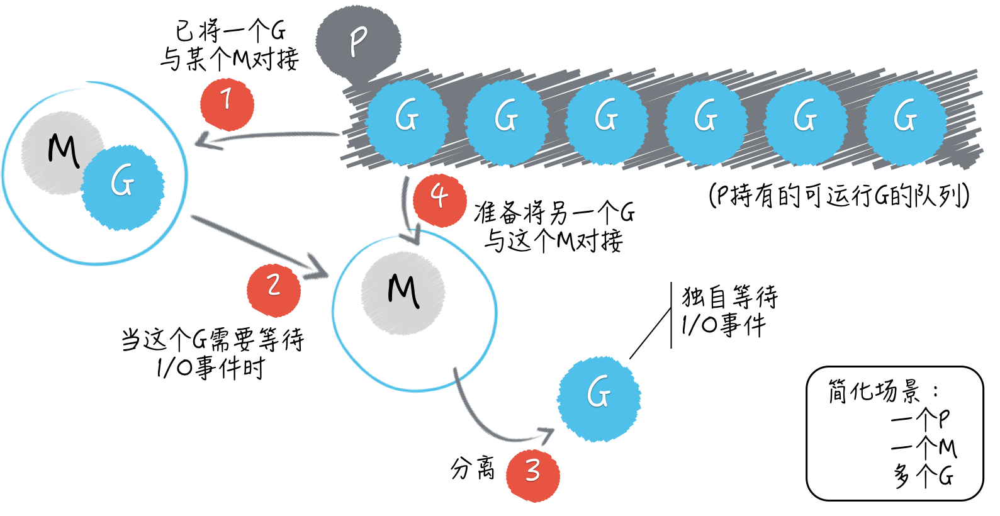

- 00 导读 写给0基础入门的Go语言学习者.md.html
- 00 导读 学习专栏的正确姿势.md.html
- 00 开篇词 跟着学，你也能成为Go语言高手.md.html
- 01 工作区和GOPATH.md.html
- 02 命令源码文件.md.html
- 03 库源码文件.md.html
- 04 程序实体的那些事儿（上）.md.html
- 05 程序实体的那些事儿（中）.md.html
- 06 程序实体的那些事儿 （下）.md.html
- 07 数组和切片.md.html
- 08 container包中的那些容器.md.html
- 09 字典的操作和约束.md.html
- 10 通道的基本操作.md.html
- 11 通道的高级玩法.md.html
- 12 使用函数的正确姿势.md.html
- 13 结构体及其方法的使用法门.md.html
- 14 接口类型的合理运用.md.html
- 15 关于指针的有限操作.md.html
- 16 go语句及其执行规则（上）.md.html
- 17 go语句及其执行规则（下）.md.html
- 18 if语句、for语句和switch语句.md.html
- 19 错误处理（上）.md.html
- 20 错误处理 （下）.md.html
- 21 panic函数、recover函数以及defer语句 （上）.md.html
- 22 panic函数、recover函数以及defer语句（下）.md.html
- 23 测试的基本规则和流程 （上）.md.html
- 24 测试的基本规则和流程（下）.md.html
- 25 更多的测试手法.md.html
- 26 sync.Mutex与sync.RWMutex.md.html
- 27 条件变量sync.Cond （上）.md.html
- 28 条件变量sync.Cond （下）.md.html
- 29 原子操作（上）.md.html
- 30 原子操作（下）.md.html
- 31 sync.WaitGroup和sync.Once.md.html
- 32 context.Context类型.md.html
- 33 临时对象池sync.Pool.md.html
- 34 并发安全字典sync.Map （上）.md.html
- 35 并发安全字典sync.Map (下).md.html
- 36 unicode与字符编码.md.html
- 37 strings包与字符串操作.md.html
- 38 bytes包与字节串操作（上）.md.html
- 39 bytes包与字节串操作（下）.md.html
- 40 io包中的接口和工具 （上）.md.html
- 41 io包中的接口和工具 （下）.md.html
- 42 bufio包中的数据类型 （上）.md.html
- 43 bufio包中的数据类型（下）.md.html
- 44 使用os包中的API （上）.md.html
- 45 使用os包中的API （下）.md.html
- 46 访问网络服务.md.html
- 47 基于HTTP协议的网络服务.md.html
- 48 程序性能分析基础（上）.md.html
- 49 程序性能分析基础（下）.md.html
- 尾声 愿你披荆斩棘，所向无敌.md.html
- 新年彩蛋 完整版思考题答案.md.html
- 捐赠
16 go语句及其执行规则（上）
你很棒，已经学完了关于Go语言数据类型的全部内容。我相信你不但已经知晓了怎样高效地使用Go语言内建的那些数据类型，还明白了怎样正确地创造自己的数据类型。
对于Go语言的编程知识，你确实已经知道了不少了。不过，如果你真想玩转Go语言还需要知道它的一些特色流程和语法。
尤其是我们将会在本篇文章中讨论的go语句，这也是Go语言的最大特色了。它足可以代表Go语言最重要的编程哲学和并发编程模式。
让我们再重温一下下面这句话：
Don’t communicate by sharing memory; share memory by communicating.
从Go语言编程的角度解释，这句话的意思就是：不要通过共享数据来通讯，恰恰相反，要以通讯的方式共享数据。
我们已经知道，通道（也就是channel）类型的值，可以被用来以通讯的方式共享数据。更具体地说，它一般被用来在不同的goroutine之间传递数据。那么goroutine到底代表着什么呢？
简单来说，goroutine代表着并发编程模型中的用户级线程。你可能已经知道，操作系统本身提供了进程和线程，这两种并发执行程序的工具。
前导内容：进程与线程
进程，描述的就是程序的执行过程，是运行着的程序的代表。换句话说，一个进程其实就是某个程序运行时的一个产物。如果说静静地躺在那里的代码就是程序的话，那么奔跑着的、正在发挥着既有功能的代码就可以被称为进程。
我们的电脑为什么可以同时运行那么多应用程序？我们的手机为什么可以有那么多App同时在后台刷新？这都是因为在它们的操作系统之上有多个代表着不同应用程序或App的进程在同时运行。
再来说说线程。首先，线程总是在进程之内的，它可以被视为进程中运行着的控制流（或者说代码执行的流程）。
一个进程至少会包含一个线程。如果一个进程只包含了一个线程，那么它里面的所有代码都只会被串行地执行。每个进程的第一个线程都会随着该进程的启动而被创建，它们可以被称为其所属进程的主线程。
相对应的，如果一个进程中包含了多个线程，那么其中的代码就可以被并发地执行。除了进程的第一个线程之外，其他的线程都是由进程中已存在的线程创建出来的。
也就是说，主线程之外的其他线程都只能由代码显式地创建和销毁。这需要我们在编写程序的时候进行手动控制，操作系统以及进程本身并不会帮我们下达这样的指令，它们只会忠实地执行我们的指令。
不过，在Go程序当中，Go语言的运行时（runtime）系统会帮助我们自动地创建和销毁系统级的线程。这里的系统级线程指的就是我们刚刚说过的操作系统提供的线程。
而对应的用户级线程指的是架设在系统级线程之上的，由用户（或者说我们编写的程序）完全控制的代码执行流程。用户级线程的创建、销毁、调度、状态变更以及其中的代码和数据都完全需要我们的程序自己去实现和处理。
这带来了很多优势，比如，因为它们的创建和销毁并不用通过操作系统去做，所以速度会很快，又比如，由于不用等着操作系统去调度它们的运行，所以往往会很容易控制并且可以很灵活。
但是，劣势也是有的，最明显也最重要的一个劣势就是复杂。如果我们只使用了系统级线程，那么我们只要指明需要新线程执行的代码片段，并且下达创建或销毁线程的指令就好了，其他的一切具体实现都会由操作系统代劳。
但是，如果使用用户级线程，我们就不得不既是指令下达者，又是指令执行者。我们必须全权负责与用户级线程有关的所有具体实现。
操作系统不但不会帮忙，还会要求我们的具体实现必须与它正确地对接，否则用户级线程就无法被并发地，甚至正确地运行。毕竟我们编写的所有代码最终都需要通过操作系统才能在计算机上执行。这听起来就很麻烦，不是吗？
不过别担心，Go语言不但有着独特的并发编程模型，以及用户级线程goroutine，还拥有强大的用于调度goroutine、对接系统级线程的调度器。
这个调度器是Go语言运行时系统的重要组成部分，它主要负责统筹调配Go并发编程模型中的三个主要元素，即：G（goroutine的缩写）、P（processor的缩写）和M（machine的缩写）。
其中的M指代的就是系统级线程。而P指的是一种可以承载若干个G，且能够使这些G适时地与M进行对接，并得到真正运行的中介。
从宏观上说，G和M由于P的存在可以呈现出多对多的关系。当一个正在与某个M对接并运行着的G，需要因某个事件（比如等待I/O或锁的解除）而暂停运行的时候，调度器总会及时地发现，并把这个G与那个M分离开，以释放计算资源供那些等待运行的G使用。
而当一个G需要恢复运行的时候，调度器又会尽快地为它寻找空闲的计算资源（包括M）并安排运行。另外，当M不够用时，调度器会帮我们向操作系统申请新的系统级线程，而当某个M已无用时，调度器又会负责把它及时地销毁掉。
正因为调度器帮助我们做了很多事，所以我们的Go程序才总是能高效地利用操作系统和计算机资源。程序中的所有goroutine也都会被充分地调度，其中的代码也都会被并发地运行，即使这样的goroutine有数以十万计，也仍然可以如此。

M、P、G之间的关系（简化版）
由于篇幅原因，关于Go语言内部的调度器和运行时系统的更多细节，我在这里就不再深入讲述了。你需要知道，Go语言实现了一套非常完善的运行时系统，保证了我们的程序在高并发的情况下依旧能够稳定、高效地运行。
如果你对这些具体的细节感兴趣，并还想进一步探索，那么我推荐你去看看我写的那本《Go并发编程实战》。我在这本书中用了相当大的篇幅阐释了Go语言并发编程模型的原理、运作机制，以及所有与之紧密相关的知识。
下面，我会从编程实践的角度出发，以go语句的用法为主线，向你介绍go语句的执行规则、最佳实践和使用禁忌。
我们来看一下今天的问题：什么是主goroutine，它与我们启用的其他goroutine有什么不同？
我们具体来看一道我在面试中经常提问的编程题。
package main
import "fmt"
func main() {
for i := 0; i < 10; i++ {
go func() {
fmt.Println(i)
}()
}
}
在demo38.go中，我只在main函数中写了一条for语句。这条for语句中的代码会迭代运行10次，并有一个局部变量i代表着当次迭代的序号，该序号是从0开始的。
在这条for语句中仅有一条go语句，这条go语句中也仅有一条语句。这条最里面的语句调用了fmt.Println函数并想要打印出变量i的值。
这个程序很简单，三条语句逐条嵌套。我的具体问题是：这个命令源码文件被执行后会打印出什么内容？
这道题的典型回答是：不会有任何内容被打印出来。
问题解析
与一个进程总会有一个主线程类似，每一个独立的Go程序在运行时也总会有一个主goroutine。这个主goroutine会在Go程序的运行准备工作完成后被自动地启用，并不需要我们做任何手动的操作。
想必你已经知道，每条go语句一般都会携带一个函数调用，这个被调用的函数常常被称为go函数。而主goroutine的go函数就是那个作为程序入口的main函数。
一定要注意，go函数真正被执行的时间，总会与其所属的go语句被执行的时间不同。当程序执行到一条go语句的时候，Go语言的运行时系统，会先试图从某个存放空闲的G的队列中获取一个G（也就是goroutine），它只有在找不到空闲G的情况下才会去创建一个新的G。
这也是为什么我总会说“启用”一个goroutine，而不说“创建”一个goroutine的原因。已存在的goroutine总是会被优先复用。
然而，创建G的成本也是非常低的。创建一个G并不会像新建一个进程或者一个系统级线程那样，必须通过操作系统的系统调用来完成，在Go语言的运行时系统内部就可以完全做到了，更何况一个G仅相当于为需要并发执行代码片段服务的上下文环境而已。
在拿到了一个空闲的G之后，Go语言运行时系统会用这个G去包装当前的那个go函数（或者说该函数中的那些代码），然后再把这个G追加到某个存放可运行的G的队列中。
这类队列中的G总是会按照先入先出的顺序，很快地由运行时系统内部的调度器安排运行。虽然这会很快，但是由于上面所说的那些准备工作还是不可避免的，所以耗时还是存在的。
因此，go函数的执行时间总是会明显滞后于它所属的go语句的执行时间。当然了，这里所说的“明显滞后”是对于计算机的CPU时钟和Go程序来说的。我们在大多数时候都不会有明显的感觉。
在说明了原理之后，我们再来看这种原理下的表象。请记住，只要go语句本身执行完毕，Go程序完全不会等待go函数的执行，它会立刻去执行后边的语句。这就是所谓的异步并发地执行。
这里“后边的语句”指的一般是for语句中的下一个迭代。然而，当最后一个迭代运行的时候，这个“后边的语句”是不存在的。
在demo38.go中的那条for语句会以很快的速度执行完毕。当它执行完毕时，那10个包装了go函数的goroutine往往还没有获得运行的机会。
请注意，go函数中的那个对fmt.Println函数的调用是以for语句中的变量i作为参数的。你可以想象一下，如果当for语句执行完毕的时候，这些go函数都还没有执行，那么它们引用的变量i的值将会是什么？
它们都会是10，对吗？那么这道题的答案会是“打印出10个10”，是这样吗？
在确定最终的答案之前，你还需要知道一个与主goroutine有关的重要特性，即：一旦主goroutine中的代码（也就是main函数中的那些代码）执行完毕，当前的Go程序就会结束运行。
如此一来，如果在Go程序结束的那一刻，还有goroutine未得到运行机会，那么它们就真的没有运行机会了，它们中的代码也就不会被执行了。
我们刚才谈论过，当for语句的最后一个迭代运行的时候，其中的那条go语句即是最后一条语句。所以，在执行完这条go语句之后，主goroutine中的代码也就执行完了，Go程序会立即结束运行。那么，如果这样的话，还会有任何内容被打印出来吗？
严谨地讲，Go语言并不会去保证这些goroutine会以怎样的顺序运行。由于主goroutine会与我们手动启用的其他goroutine一起接受调度，又因为调度器很可能会在goroutine中的代码只执行了一部分的时候暂停，以期所有的goroutine有更公平的运行机会。
所以哪个goroutine先执行完、哪个goroutine后执行完往往是不可预知的，除非我们使用了某种Go语言提供的方式进行了人为干预。然而，在这段代码中，我们并没有进行任何人为干预。
那答案到底是什么呢？就demo38.go中如此简单的代码而言，绝大多数情况都会是“不会有任何内容被打印出来”。
但是为了严谨起见，无论应聘者的回答是“打印出10个10”还是“不会有任何内容被打印出来”，又或是“打印出乱序的0到9”，我都会紧接着去追问“为什么？”因为只有你知道了这背后的原理，你做出的回答才会被认为是正确的。
这个原理是如此的重要，以至于如果你不知道它，那么就几乎无法编写出正确的可并发执行的程序。如果你不知道此原理，那么即使你写的并发程序看起来可以正确地运行，那也肯定是运气好而已。
总结
今天，我描述了goroutine在操作系统的并发编程体系，以及在Go语言并发编程模型中的地位和作用。这些知识点会为你打下一个坚实的基础。
我还提到了Go语言内部的运行时系统和调度器，以及它们围绕着goroutine做的那些统筹调配和维护工作。这些内容中的每句话应该都会对你正确理解goroutine起到实质性的作用。你可以用这些知识去解释主问题中的那个程序在运行后为什么会产出那样的结果。
下一篇内容，我们还会继续围绕go语句以及执行规则谈一些扩展知识，今天留给你的思考题就是：用什么手段可以对goroutine的启用数量加以限制？
感谢你的收听，我们下次再见。
© 2019 - 2023 Liangliang Lee. Powered by gin and hexo-theme-book.